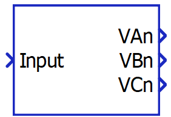
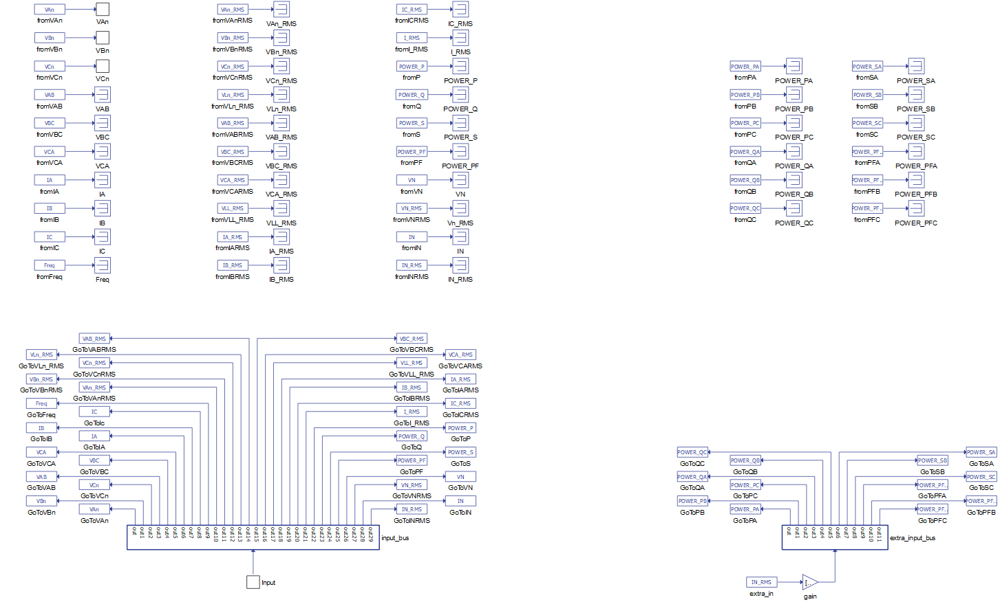
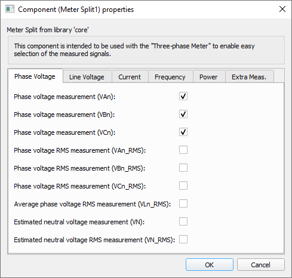
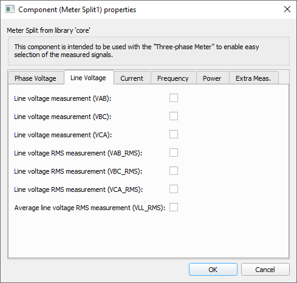
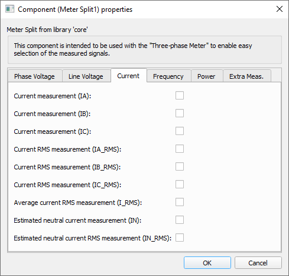
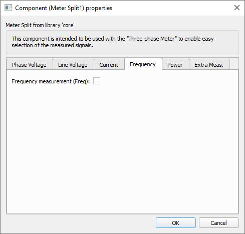
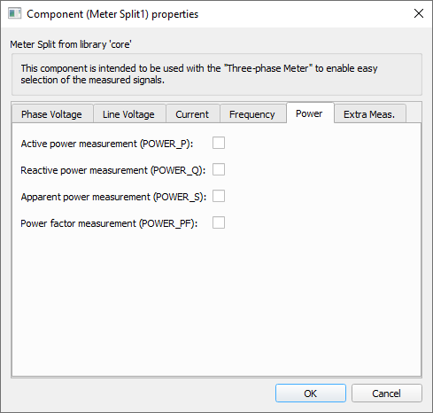
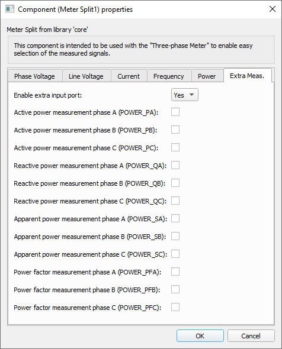

Meter Split
This section describes the three-phase meter split component from the Microgrid library.
The Meter Split is a component located in the Microgrid Library. The component's icon and properties window are shown in Table 1. The Meter Split is a masked bus split that is compatible with the signal processing outputs of the Three-phase Meter. Its inputs are vectors of fixed size, while its outputs are scalar values. Its size and number of output ports are changed dynamically based on the selected measurements.
| component | component dialog window | component parameters |
|---|---|---|
 Meter Split |
 |
|

Tab: "Phase Voltage"
In this properties tab, the phase and neutral instantaneous and rms voltage measurements can be enabled.

| Parameter | Code name | Description |
|---|---|---|
| Phase voltage measurement (VAn) | van | Checkbox that enables phase A's instantaneous voltage measurement output |
| Phase voltage measurement (VBn) | VBn | Checkbox that enables phase B's instantaneous voltage measurement output |
| Phase voltage measurement (VCn) | VCn | Checkbox that enables phase C's instantaneous voltage measurement output |
| Phase RMS voltage measurement (VAn_RMS) | van_rms | Checkbox that enables phase A's RMS voltage measurement output |
| Phase RMS voltage measurement (VBn_RMS) | vbn_rms | Checkbox that enables phase B's RMS voltage measurement output |
| Phase RMS voltage measurement (VCn_RMS) | vcn_rms | Checkbox that enables phase C's RMS voltage measurement output |
| Average phase voltage RMS measurement (VLn_RMS) | vln_rms | Checkbox that enables the average phase voltage RMS measurement output |
| Estimated neutral voltage measurement (VN) | vn | Checkbox that enables the estimated neutral voltage instantaneous measurement output |
| Estimated neutral voltage RMS measurement (VN_RMS) | vn_rms | Checkbox that enables the estimated neutral voltage RMS measurement output |
Tab: "Line Voltage"
In this properties tab, the line instantaneous and rms voltage measurements can be enabled.

| Parameter | Code name | Description |
|---|---|---|
| Line voltage measurement (VAB) | vab | Checkbox that enables line AB's instantaneous voltage measurement output |
| Line voltage measurement (VBC) | vbc | Checkbox that enables line BC's instantaneous voltage measurement output |
| Line voltage measurement (VCA) | vca | Checkbox that enables line CA's instantaneous voltage measurement output |
| Line RMS voltage measurement (VAB_RMS) | vab_rms | Checkbox that enables line AB's RMS voltage measurement output |
| Line RMS voltage measurement (VBC_RMS) | vbc_rms | Checkbox that enables line BC's RMS voltage measurement output |
| Line RMS voltage measurement(VCA_RMS) | vca_rms | Checkbox that enables line CA's RMS voltage measurement output |
| Average line voltage RMS measurement (VLL_RMS) | vll_rms | Checkbox that enables the average line voltage RMS measurement output |
Tab: "Current"
In this properties tab, the phase current measurements can be enabled.

| Parameter | Code name | Description |
|---|---|---|
| Current measurement (IA) | ia | Checkbox that enables phase A's instantaneous current measurement output |
| Current measurement (IB) | ib | Checkbox that enables phase B's instantaneous current measurement output |
| Current measurement (IC) | ic | Checkbox that enables phase C's instantaneous current measurement output |
| Current RMS measurement (IA_RMS) | ia_rms | Checkbox that enables phase A's RMS current measurement output |
| Current RMS measurement (IB_RMS) | ib_rms | Checkbox that enables phase B's RMS current measurement output |
| Current RMS measurement (IC_RMS) | ic_rms | Checkbox that enables phase C's RMS current measurement output |
| Averege current RMS measurement (I_RMS) | i_rms | Checkbox that enables the average phase current RMS measurement output |
| Estimated neutral current measurement (IN) | ineutral | Checkbox that enables the estimated neutral current instantaneous measurement output |
| Estimated neutral current RMS measurement (IN_RMS) | in_rms | Checkbox that enables the estimated neutral current RMS measurement output |
Tab: "Frequency"
In this properties tab, the frequency measurement can be enabled.

| Parameter | Code name | Description |
|---|---|---|
| Frequency measurement (Freq) | freq | Checkbox that enables the frequency measurement output |
Tab: "Power"
In this properties tab, the power measurements can be enabled.

| Parameter | Code name | Description |
|---|---|---|
| Active power measurement (POWER_P) | power_p | Checkbox that enables the three-phase active power measurement output |
| Reactive power measurement (POWER_Q) | power_q | Checkbox that enables the three-phase reactive power measurement output |
| Apparent power measurement (POWER_S) | power_s | Checkbox that enables the three-phase apparent power measurement output |
| Power factor measurement (POWER_PF) | power_pf | Checkbox that enables the three-phase power factor measurement output |
Tab: "Extra Meas."
In this properties tab, the extra input port can be enabled. Consequently, the per-phase power measurement checkboxes are shown and can be enabled.

| Parameter | Code name | Description |
|---|---|---|
| Enable extra input port | enable_extra_in | Combo box that enables choosing between Yes and No options. The default
option is No. When the option selected is Yes the per-phase power measurement checkboxes are made visible. |
| Active power measurement phase A (POWER_PA) | power_pa | Checkbox that enables phase A's active power measurement output |
| Active power measurement phase B (POWER_PB) | power_pb | Checkbox that enables phase B's active power measurement output |
| Active power measurement phase C (POWER_PC) | power_pc | Checkbox that enables phase C's active power measurement output |
| Reactive power measurement phase A (POWER_QA) | power_qa | Checkbox that enables phase A's reactive power measurement output |
| Reactive power measurement phase B (POWER_QB) | power_qb | Checkbox that enables phase B's reactive power measurement output |
| Reactive power measurement phase C (POWER_QC) | power_qc | Checkbox that enables phase C's reactive power measurement output |
| Apparent power measurement phase A (POWER_SA) | power_sa | Checkbox that enables phase A's apparent power measurement output |
| Apparent power measurement phase B (POWER_SB) | power_sb | Checkbox that enables phase B's apparent power measurement output |
| Apparent power measurement phase C (POWER_SC) | power_sc | Checkbox that enables phase C's apparent power measurement output |
| Power factor measurement phase A (POWER_PFA) | power_pfa | Checkbox that enables phase A's power factor measurement output |
| Power factor measurement phase B (POWER_PFB) | power_pfb | Checkbox that enables phase B's power factor measurement output |
| Power factor measurement phase C (POWER_PFC) | power_pfc | Checkbox that enables phase C's power factor measurement output |
Example
Overall behavior can be better understood with the use of the given meter split example:
Model name: meter_and_const_z_load.tse
SCADA interface: SCADA_Panel.cus
Path: /examples/models/microgrid/meter_and_constant_z_load/